layout: true .toc.banner[ .sevinlogo[ ] .footer[ ] .shorttitle[ Research in Russia ] ] --- name: home class: metadata customtitle middle left giphy .toc.sidebar.left-column[ .outline[ # [.pass[Activity] ](#He38f8) # [.pass[Results] ](#H962da) # [.pass[Publications] ](#bib) ] ] .toc.mainbar.right-column.scrollable[ .authors[ .author[Sergey Naidenko, .speaker[Nikita Platonov], Ilya Mordvintsev, Evgeny Ivanov, Svetlana Artemieva] .institute[Severtsov Institute of Ecology and Evolution of the Russian Academy of Sciences] ] .title[ Polar Bear Research in Russia in 2023-2025 ] .subtitle[ conducted by the Severtsov Institute of Ecology and Evolution of the Russian Academy of Sciences ] .what[ Polar Bear Range States Meeting of the Parties ] .where[ ] .when[ January 20-23, 2026 .updated[Updated: 2026-01-21 09:30] ] ] --- name: He38f8 .toc.sidebar.left-column[ .outline[ # [.pass[Activity] ](#He38f8).fg[] ## [Research program](#He38f8).fg[].bg[] ## [Main methods](#Hb473c).bg[] # [.pass[Results] ](#H962da) # [.pass[Publications] ](#bib) ] ] .toc.mainbar.right-column.scrollable[ .header.h2.show[ Program of polar bear study in the Russian Arctic .parent[.grand[.pass[Activity]]] ] .fixprecode[ .grid[ 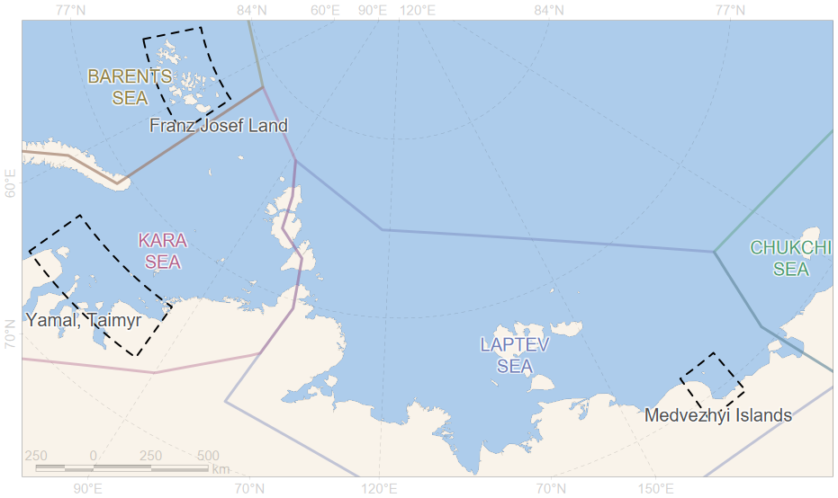 .shared[ The Institute of Ecology and Evolution of the Russian Academy of Sciences (IEE RAS) continues polar bear research in the Russian Arctic, which began in 2010 under the Program of the Russian Academy of Sciences. Research is being conducted in accordance with the Strategy for the Conservation of Polar Bears in the Russian Federation for the period until 2030. ] ] In 2023-2025, monitoring of polar bears was carried out on the Franz Josef Land archipelago, the islands in the .inset.kara[Kara Sea] near the Yamal and Taimyr Peninsulas, as well as in the East Siberian Sea on the .inset.chersky[Bear Islands] (*Medvezhyi Islands*) archipelago. .shared[ The main contribution was on research and monitoring of the Kara Sea polar bear subpopulation ] ] ] ??? **01** Thank you Magnus, thank you Dag. I will now begin Section One about polar bear research in Russia, provided by the Severtsov Institute of Ecology and Evolution of the Russian Academy of Sciences. **02** The institute has been conducting its polar bear studies in the Russian Arctic since 2010 .grey[, in accordance with the Strategy for the Conservation of Polar Bears in the Russian Federation for the period until 2030. ] In 2023-2025, we carried out polar bear monitoring on the Franz Josef Land Archipelago, islands in the Kara Sea near by Yamal and Taimyr Peninsulas, and the Bear Islands Archipelago .grey[(Medvezhyi Islands)] in the East Siberian Sea. --- name: Hb473c .toc.sidebar.left-column[ .outline[ # [.pass[Activity] ](#He38f8).fg[] ## [Research program](#He38f8).bg[] ## [Main methods](#Hb473c).fg[].bg[] # [.pass[Results] ](#H962da) # [.pass[Publications] ](#bib) ] ] .toc.mainbar.right-column.scrollable[ .header.h2.show[ Main methods of polar bears research .parent[.grand[.pass[Activity]]] ] .fixprecode[ .pulling[ .pull-left-70[ + Study of abundance and distribution of polar bears + Field survey and observations + Aerial and ship survey and observations + Satellite telemetry for evaluating the polar bear movement, behaviour and resource use + Health assessment of polar bears and study of the influence of natural and anthropogenic factors on the animal health + Dangerous diseases (serological study) + Hematological study + Toxicological study + Polar bear population structure studies by molecular genetic methods ] .pull-right-30[ .untouchable[ <img src="assets/stelsing.jpg" alt="" width="1330" height="700" untouchable style="display: block; margin: auto auto auto 0;" /> 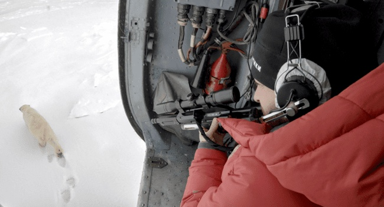 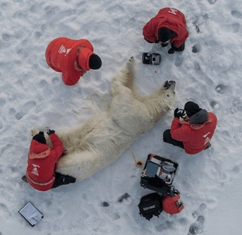 ] ] ] ] ] ??? Our polar bear research includes population studies via aerial and ground surveys; satellite tracking of movement and behavior; and comprehensive health assessments focusing on diseases, blood parameters, and toxicology to evaluate natural and human impacts, as well as population genetics. --- name: H962da .toc.sidebar.left-column[ .outline[ # [.pass[Activity] ](#He38f8) # [.pass[Results] ](#H962da).fg[] ## [Field work](#H962da).fg[].bg[] ### [Surveys](#H91a0a) ### [Captures](#H14289) ### [Tagging](#H99a06) ## [Satellite telemetry](#H67064) ## [.pass[Aerial surveys] ](#Hfd293) ## [.pass[Health assessment] ](#H04bbe) # [.pass[Publications] ](#bib) ] ] .toc.mainbar.right-column.scrollable[ .header.h2.show[ Field work results in 2023-2025 .parent[.grand[.pass[Results]]] ] .fixprecode[ .pulling[ .pull-left-70[ .smallest[ ] **11** expeditions to the Barents, Kara and East Siberian Seas were carried out in spring and summer-autumn seasons; .smallest[ ] **338** polar bears were recorded during observations; .smallest[ ] **34** polar bears were captured during this period; .smallest[ ] **13** females and **6** males were tagged with satellite transmitters; .smallest[ ] **102** biological samples were taken from immobilized individuals (blood, hair, excrement); ] .pull-right-30[ .untouchable[ <img src="assets/polarbear-single.jpg" alt="" width="1330" height="700" untouchable style="display: block; margin: auto auto auto 0;" /> <img src="assets/polarbear-group.jpg" alt="" width="1330" height="700" untouchable style="display: block; margin: auto auto auto 0;" /> .forshow[ <img src="https://data.seaice.uni-bremen.de/amsr2/today/extent_n_running_mean_amsr2_previous.png" alt="" width="1330" height="700" untouchable style="display: block; margin: auto auto auto 0;" /> ] ] ] ] ] ] ??? Data collection is conducted only in the natural habitat of polar bears .gray[ ...during daylight period of the year. Fast ice is available in spring season. Ice-free ground data collection finishes before November. Ice conditions at sea depend on the navigation area. ] Eleven ground and marine expeditions were carried out from 2023 to 2025. About three hundred forty polar bears were observed during marine, aerial and ground surveys. Thirty-four polar bears were captured using helicopter, and snowmobile. <!-- and bait station --> Thirteen polar bear females were tagged by satellite-linked radio and GPS collars. Ear-mounted telemetry tags were affixed to six polar bear males. One hundred and two biological samples were taken from immobilized polar bears. They generally includes blood, hair and, when available, fecals. --- name: H91a0a .toc.sidebar.left-column[ .outline[ # [.pass[Activity] ](#He38f8) # [.pass[Results] ](#H962da).fg[] ## [Field work](#H962da).fg[] ### [Surveys](#H91a0a).fg[].bg[] ### [Captures](#H14289).bg[] ### [Tagging](#H99a06).bg[] ## [Satellite telemetry](#H67064) ## [.pass[Aerial surveys] ](#Hfd293) ## [.pass[Health assessment] ](#H04bbe) # [.pass[Publications] ](#bib) ] ] .toc.mainbar.right-column.scrollable[ .header.h3.show[ Number of polar bears observed, 2023-2025 .parent[.grand[Field work .grand[.pass[Results]]]] ] .fixprecode[ Results for 2023 include observations from ship during a cruise in the Barents and Kara Seas in July. ] ] ??? Only one polar bear was observed in the Franz Josef Land archipelago in the spring of 2024. An additional eleven observations in this region were made from the ship's deck during a cruise in the Kara and Barents Seas in July 2023. During this cruise, polar bears were observed near Vaigach Island and in the southern part of the Kara Sea. In 2024, twenty polar bears were observed during an aerial survey of Bely Island in the Kara Sea, seventy-one during an aerial survey of the Bear Islands Archipelago, and thirty-five along the northern coastline of the Yenisey River estuary. In 2025, seventy-three polar bears were observed in the Kara Sea during the spring season. Half of them were found at the edge of the fast ice while searching for animals to capture, and the other half were across a wide area of the Kara Sea during an aerial survey for a polar bear census. More than one hundred polar bears were observed in the Bear Islands Archipelago. --- name: H14289 .toc.sidebar.left-column[ .outline[ # [.pass[Activity] ](#He38f8) # [.pass[Results] ](#H962da).fg[] ## [Field work](#H962da).fg[] ### [Surveys](#H91a0a).bg[] ### [Captures](#H14289).fg[].bg[] ### [Tagging](#H99a06).bg[] ## [Satellite telemetry](#H67064) ## [.pass[Aerial surveys] ](#Hfd293) ## [.pass[Health assessment] ](#H04bbe) # [.pass[Publications] ](#bib) ] ] .toc.mainbar.right-column.scrollable[ .header.h3.show[ Number of polar bears captured, 2023-2025 .parent[.grand[Field work .grand[.pass[Results]]]] ] .fixprecode[ <img src="assets/PBRS-capture.png" alt="" width="1330" height="700" style="display: block; margin: auto auto auto 0;" /> Immobilization was carried out mainly from a helicopter and, in some cases, from the ground using vehicles. ] ] ??? Polar bear capture using a helicopter is limited by long approach times in most regions such as Bely Island north of the Yamal Peninsula and the Bear Islands archipelago in the East Siberian Sea with maximum one animal per flight. Capture efficiency was higher near the estuary of the Yenisey River: twelve polar bears in 2024 and sixteen animals in 2025. One polar bear on Aleksandra Land Island of the Franz Josef Land archipelago was immobilized in 2024 using a snowmobile. --- name: H99a06 .toc.sidebar.left-column[ .outline[ # [.pass[Activity] ](#He38f8) # [.pass[Results] ](#H962da).fg[] ## [Field work](#H962da).fg[] ### [Surveys](#H91a0a).bg[] ### [Captures](#H14289).bg[] ### [Tagging](#H99a06).fg[].bg[] #### [Kara Sea](#H3bd04) #### [East Siberian Sea](#H67064) ## [Satellite telemetry](#H67064) ## [.pass[Aerial surveys] ](#Hfd293) ## [.pass[Health assessment] ](#H04bbe) # [.pass[Publications] ](#bib) ] ] .toc.mainbar.right-column.scrollable[ .header.h3.show[ Number of polar bears tagged, 2023-2025 .parent[.grand[Field work .grand[.pass[Results]]]] ] .fixprecode[ 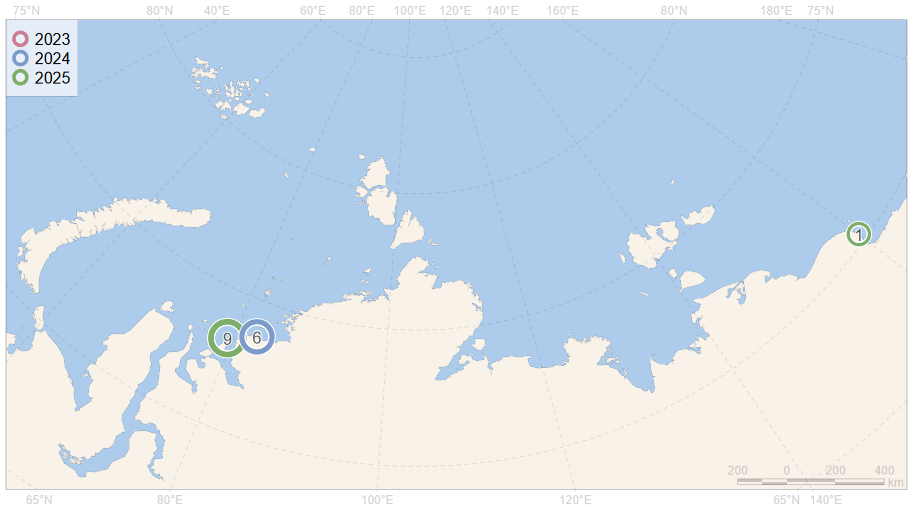 Satellite-linked radio and GPS collars for females and ear-mounted satellite tags for males produced by the Russian company "Es Pas" are used. ] ] ??? Polar bears were tagged on the fast ice of the Kara Sea in April–May 2025 and on the land of islands in the Kara and East Siberian Seas during the ice-free period in August–October 2024 and 2025. Biotelemtry devices are produced by the Russian company "EsPAS". --- name: H3bd04 .toc.sidebar.left-column[ .outline[ # [.pass[Activity] ](#He38f8) # [.pass[Results] ](#H962da).fg[] ## [Field work](#H962da).fg[] ### [Surveys](#H91a0a) ### [Captures](#H14289) ### [Tagging](#H99a06).fg[] #### [Kara Sea](#H3bd04) <span class="bullet bullet-active">[•](#H3bd04)</span><span class="bullet mslide20m">[•](#He2ae2)</span><span class="bullet mslide22m">[•](#H0ca04)</span>.fg[].bg[] #### [East Siberian Sea](#H67064).bg[] ## [Satellite telemetry](#H67064) ## [.pass[Aerial surveys] ](#Hfd293) ## [.pass[Health assessment] ](#H04bbe) # [.pass[Publications] ](#bib) ] ] .toc.mainbar.right-column.scrollable[ .header.h4.show[ Satellite tagging of polar bears in the Kara Sea, 2024-2025 .parent[.grand[Tagging .grand[Field work] .grand[.pass[Results]]]] ] .fixprecode[ <img src="assets/collar-2024.png" alt="" width="1330" height="700" tagging style="display: block; margin: auto auto auto 0;" /> August-September, 2024. 6 polar bears (4 females and 2 males) were tagged on land during the ice-free period ] ] ??? The spatial distribution of the tagged polar bears during August and September 2024 was associated with the coastline of the Taimyr Peninsula and adjacent islands. .red[ The spatial distribution of the tagged polar bears ] --- name: He2ae2 .toc.sidebar.left-column[ .outline[ # [.pass[Activity] ](#He38f8) # [.pass[Results] ](#H962da).fg[] ## [Field work](#H962da).fg[] ### [Surveys](#H91a0a) ### [Captures](#H14289) ### [Tagging](#H99a06).fg[] #### [Kara Sea](#H3bd04) <span class="bullet bullet">[•](#H3bd04)</span><span class="bullet bullet-active">[•](#He2ae2)</span><span class="bullet mslide22m">[•](#H0ca04)</span>.fg[].bg[] #### [East Siberian Sea](#H67064).bg[] ## [Satellite telemetry](#H67064) ## [.pass[Aerial surveys] ](#Hfd293) ## [.pass[Health assessment] ](#H04bbe) # [.pass[Publications] ](#bib) ] ] .toc.mainbar.right-column.scrollable[ .header.h4.show[ Satellite tagging of polar bears in the Kara Sea, 2024-2025 .parent[.grand[Tagging .grand[Field work] .grand[.pass[Results]]]] ] .fixprecode[ 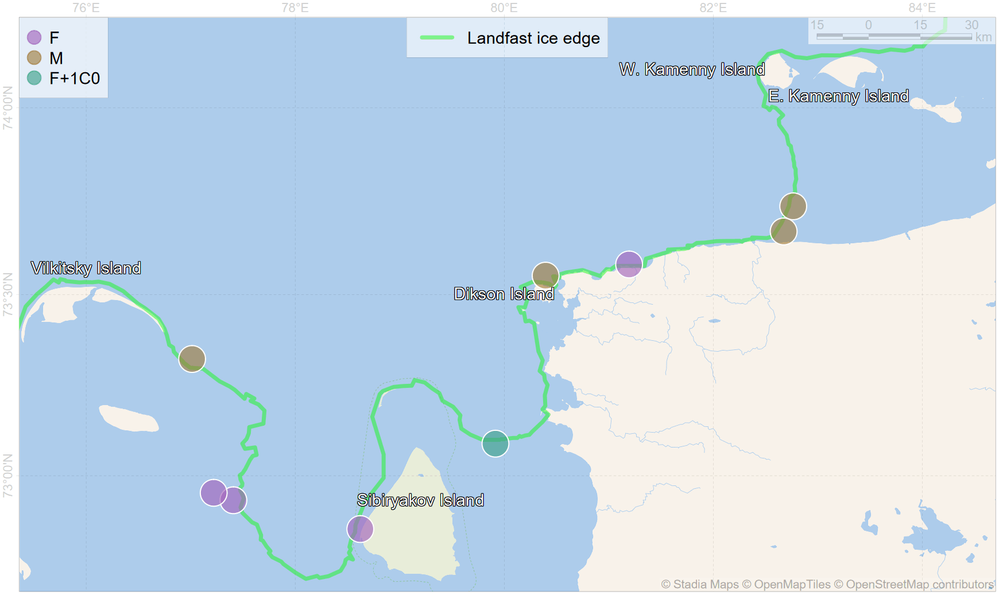 April-May, 2025. 9 polar bears (5 females and 4 males) were tagged on fast ice ] ] ??? In April and May 2025 during field work in the same region all polar bear tagging locations were at the fast-ice edge. --- name: H0ca04 .toc.sidebar.left-column[ .outline[ # [.pass[Activity] ](#He38f8) # [.pass[Results] ](#H962da).fg[] ## [Field work](#H962da).fg[] ### [Surveys](#H91a0a) ### [Captures](#H14289) ### [Tagging](#H99a06).fg[] #### [Kara Sea](#H3bd04) <span class="bullet bullet">[•](#H3bd04)</span><span class="bullet bullet">[•](#He2ae2)</span><span class="bullet bullet-active">[•](#H0ca04)</span>.fg[].bg[] #### [East Siberian Sea](#H67064).bg[] ## [Satellite telemetry](#H67064) ## [.pass[Aerial surveys] ](#Hfd293) ## [.pass[Health assessment] ](#H04bbe) # [.pass[Publications] ](#bib) ] ] .toc.mainbar.right-column.scrollable[ .header.h4.show[ Satellite tagging of polar bears in the Kara Sea, 2024-2025 .parent[.grand[Tagging .grand[Field work] .grand[.pass[Results]]]] ] .fixprecode[ 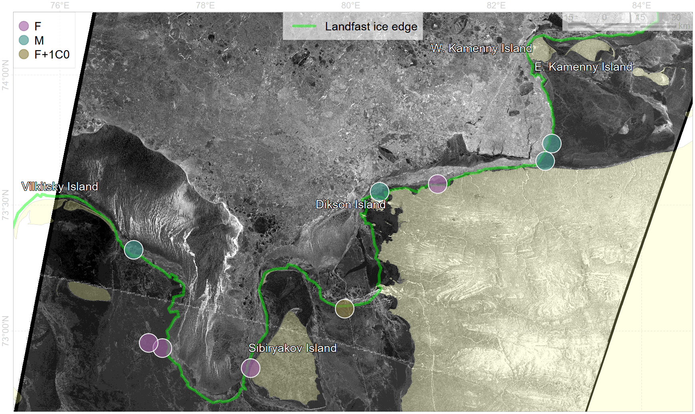 .shared[ ] During the spring melt season, pack ice was not reliable for immobilization and following ground manipulations with polar bears. ] ] ??? .RED[SKIP] A series of radar satellite images were used to identify the edge of the fast ice for route planning for polar bear searches. Based on observations of animal trails, the pack ice in this region during the spring season was rarely used by polar bears. This ice type was fragile and not reliable for ground work. --- name: H67064 .toc.sidebar.left-column[ .outline[ # [.pass[Activity] ](#He38f8) # [.pass[Results] ](#H962da).fg[] ## [Field work](#H962da).bg[] ## [Satellite telemetry](#H67064) <span class="bullet bullet-active">[•](#H67064)</span><span class="bullet mslide28m">[•](#Hec75a)</span><span class="bullet mslide30m">[•](#Hfbb51)</span>.fg[].bg[] ### [Daily displacement](#H24898) ### [Sea ice habitat](#Hf7033) ## [.pass[Aerial surveys] ](#Hfd293) ## [.pass[Health assessment] ](#H04bbe) # [.pass[Publications] ](#bib) ] ] .toc.mainbar.right-column.scrollable[ .header.h2.show[ Evaluating of the polar bear movements by satellite telemetry .parent[.grand[.pass[Results]]] ] .fixprecode[ .grid[ <img src="assets/track-F-2024.png" alt="" width="1330" height="700" tracking style="display: block; margin: auto auto auto 0;" /> .shared[ After sea ice advance, polar bear females used only the southern part of the Kara Sea. ] ] Movement trajectories of 4 polar bear females in the Kara Sea, captured in 2024 on the islands and coast of Taimyr. ] ] ??? The biotelemetry data analysis here is limited to the period through November 2025, as data collection is still ongoing. Four polar bear females, tagged during the ice-free season in 2024, used only the southern part of the Kara Sea after the sea ice advance. In contrast to our tracking for polar bears in the Barents Sea, there were no individuals preferring sea ice edge. --- name: Hec75a .toc.sidebar.left-column[ .outline[ # [.pass[Activity] ](#He38f8) # [.pass[Results] ](#H962da).fg[] ## [Field work](#H962da).bg[] ## [Satellite telemetry](#H67064) <span class="bullet bullet">[•](#H67064)</span><span class="bullet bullet-active">[•](#Hec75a)</span><span class="bullet mslide30m">[•](#Hfbb51)</span>.fg[].bg[] ### [Daily displacement](#H24898) ### [Sea ice habitat](#Hf7033) ## [.pass[Aerial surveys] ](#Hfd293) ## [.pass[Health assessment] ](#H04bbe) # [.pass[Publications] ](#bib) ] ] .toc.mainbar.right-column.scrollable[ .header.h2.show[ Evaluating of the polar bear movements by satellite telemetry .parent[.grand[.pass[Results]]] ] .fixprecode[ .grid[ <img src="assets/track-F-2025.png" alt="" width="1330" height="700" tracking style="display: block; margin: auto auto auto 0;" /> ] Movement trajectories of 5 polar bear females in the Kara Sea, captured in 2025 on fast ice ] ] ??? During the ice-free period, five polar bear females, tagged in April and May 2025, preferred the coastline of the mainland and islands in the southern part of the Kara Sea. --- name: Hfbb51 .toc.sidebar.left-column[ .outline[ # [.pass[Activity] ](#He38f8) # [.pass[Results] ](#H962da).fg[] ## [Field work](#H962da).bg[] ## [Satellite telemetry](#H67064) <span class="bullet bullet">[•](#H67064)</span><span class="bullet bullet">[•](#Hec75a)</span><span class="bullet bullet-active">[•](#Hfbb51)</span>.fg[].bg[] ### [Daily displacement](#H24898) ### [Sea ice habitat](#Hf7033) ## [.pass[Aerial surveys] ](#Hfd293) ## [.pass[Health assessment] ](#H04bbe) # [.pass[Publications] ](#bib) ] ] .toc.mainbar.right-column.scrollable[ .header.h2.show[ Evaluating of the polar bear movements by satellite telemetry .parent[.grand[.pass[Results]]] ] .fixprecode[ .grid[ 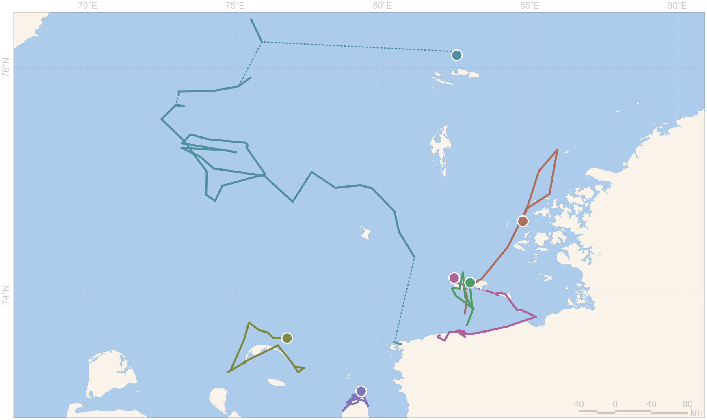 .shared[ ] ] Movement trajectories of polar bear males in the Kara Sea, captured in 2024 on shoreline and in 2025 on fast ice. ] ] ??? Ear-mounted telemetry tags are still experimental in Russian domestic production. Their functionality is limited to several weeks of operation. However, within half of a year, it succeeded in reducing the device size and weight by one-third. --- name: H24898 .toc.sidebar.left-column[ .outline[ # [.pass[Activity] ](#He38f8) # [.pass[Results] ](#H962da).fg[] ## [Field work](#H962da) ## [Satellite telemetry](#H67064).fg[] ### [Daily displacement](#H24898) <span class="bullet bullet-active">[•](#H24898)</span><span class="bullet mslide34m">[•](#Hfcd8d)</span><span class="bullet mslide36m">[•](#H12d6b)</span>.fg[].bg[] ### [Sea ice habitat](#Hf7033).bg[] ## [.pass[Aerial surveys] ](#Hfd293) ## [.pass[Health assessment] ](#H04bbe) # [.pass[Publications] ](#bib) ] ] .toc.mainbar.right-column.scrollable[ .header.h3.show[ Polar bears daily displacement .parent[.grand[Satellite telemetry .grand[.pass[Results]]]] ] .fixprecode[ .grid[ 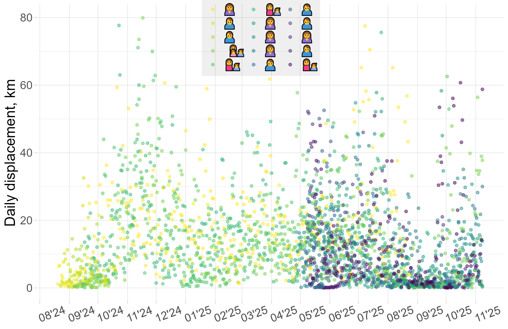 .shared[ Daily displacement was low until mid-October 2024, with values close to zero. Then, polar bear mobility increased, with non-zero values prevailing until December 2024. The next active period was between February and April. In May, the number of points increased as a result of new tagging. A decrease in mobility is observed in August and September 2025. ] ] Daily movements of 15 polar bears over a period of more than 12 months ] ] ??? .gray[ While some tagged biotelemetry transmitters are still in service, we have so far conducted only a preliminary analysis. ] One metric, extracted from biotelemetry analysis, is the distance between two locations over a twenty-four-hour period, or daily displacement. .grey[ It was low until mid-October 2024, with values close to zero. Then, polar bear mobility increased, with non-zero values prevailing until December 2024. The next active period was between February and April. In May, the number of data points increased as a result of new tagging. A decrease in mobility is observed in August and September 2025, and is associated with the ice-free period. ] --- name: Hfcd8d .toc.sidebar.left-column[ .outline[ # [.pass[Activity] ](#He38f8) # [.pass[Results] ](#H962da).fg[] ## [Field work](#H962da) ## [Satellite telemetry](#H67064).fg[] ### [Daily displacement](#H24898) <span class="bullet bullet">[•](#H24898)</span><span class="bullet bullet-active">[•](#Hfcd8d)</span><span class="bullet mslide36m">[•](#H12d6b)</span>.fg[].bg[] ### [Sea ice habitat](#Hf7033).bg[] ## [.pass[Aerial surveys] ](#Hfd293) ## [.pass[Health assessment] ](#H04bbe) # [.pass[Publications] ](#bib) ] ] .toc.mainbar.right-column.scrollable[ .header.h3.show[ Polar bears daily displacement .parent[.grand[Satellite telemetry .grand[.pass[Results]]]] ] .fixprecode[ .grid[ 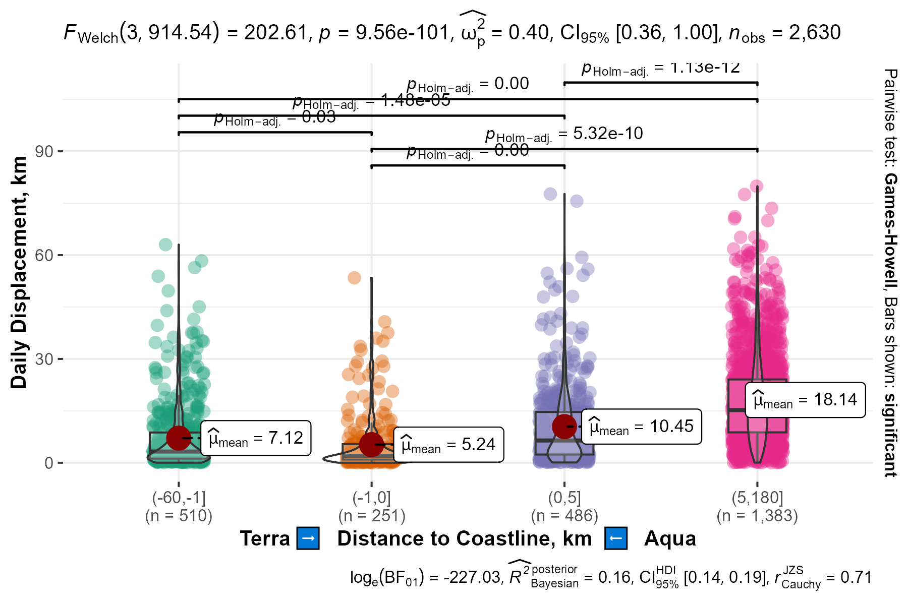 .shared[ The differences in daily displacement are statistically significant between categories of distance to the coastline: inland, coastal area within 1 km, nearshore waters within 5 km, offshore waters. Polar bears exhibit an energy-saving behavioral strategy in coastal areas and don't frequently use inland for relocation. Mobility increases in offshore waters. ] ] .formula[ Pearson's product-moment correlation <br> `\(\rho(log(\text{daily}), log(|\text{dist2land}|))=0.43\)`, `\(df=2628\)`, `\(p<0.001\)`. ] ] ] ??? The differences in daily displacement are statistically significant between categories of distance from the coastline: inland, coastal area .gray[within 1 km], nearshore waters .gray[within 5 km], offshore waters. Polar bears exhibit an energy-saving behavioral strategy in coastal areas and do not frequently use inland areas for relocation. Mobility increases in offshore waters. Pearson's correlation between the logarithm of polar bear daily displacement and the logarithm of the absolute value of the distance to the coastline is also statistically significant. --- name: H12d6b .toc.sidebar.left-column[ .outline[ # [.pass[Activity] ](#He38f8) # [.pass[Results] ](#H962da).fg[] ## [Field work](#H962da) ## [Satellite telemetry](#H67064).fg[] ### [Daily displacement](#H24898) <span class="bullet bullet">[•](#H24898)</span><span class="bullet bullet">[•](#Hfcd8d)</span><span class="bullet bullet-active">[•](#H12d6b)</span>.fg[].bg[] ### [Sea ice habitat](#Hf7033).bg[] ## [.pass[Aerial surveys] ](#Hfd293) ## [.pass[Health assessment] ](#H04bbe) # [.pass[Publications] ](#bib) ] ] .toc.mainbar.right-column.scrollable[ .header.h3.show[ Polar bears daily displacement .parent[.grand[Satellite telemetry .grand[.pass[Results]]]] ] .fixprecode[ .grid[ <img src="assets/daily-between-gebco.png" alt="" width="1330" height="700" style="display: block; margin: auto auto auto 0;" /> .shared[ The differences in daily displacement are statistically significant between categories of aquatic and terrestrial topography: water deeper than 15 m, shallow waters, lowlands and highlands over 10 m. Mobility in deep waters is higher. Incidentally, no presence outside the 300 m isobath was detected. ] ] .formula[ Pearson's product-moment correlation <br> `\(\rho(log(\text{daily}), \text{topo})=-0.34\)`, `\(df=2628\)`, `\(p<0.001\)`. ] ] ] ??? The differences in daily displacement are statistically significant between categories of aquatic and terrestrial topography: deep waters .gray[below 15 m], shallow waters, lowlands and highlands .gray[over 10 m]. Mobility in deep waters is higher. .gray[ Incidentally, no presence beyond the three hundred meters isobath was detected. ] Pearson’s correlation between the logarithm of polar bear daily displacement and depth/altitude is also statistically significant. .footer[ Incidentally = Инси-дентали ] --- name: Hf7033 .toc.sidebar.left-column[ .outline[ # [.pass[Activity] ](#He38f8) # [.pass[Results] ](#H962da).fg[] ## [Field work](#H962da) ## [Satellite telemetry](#H67064).fg[] ### [Daily displacement](#H24898).bg[] ### [Sea ice habitat](#Hf7033) <span class="bullet bullet-active">[•](#Hf7033)</span><span class="bullet mslide40m">[•](#Hb4f48)</span><span class="bullet mslide42m">[•](#H5afae)</span>.fg[].bg[] ## [.pass[Aerial surveys] ](#Hfd293) ## [.pass[Health assessment] ](#H04bbe) # [.pass[Publications] ](#bib) ] ] .toc.mainbar.right-column.scrollable[ .header.h3.show[ Sea ice habitat availability and use .parent[.grand[Satellite telemetry .grand[.pass[Results]]]] ] .fixprecode[ .grid[ 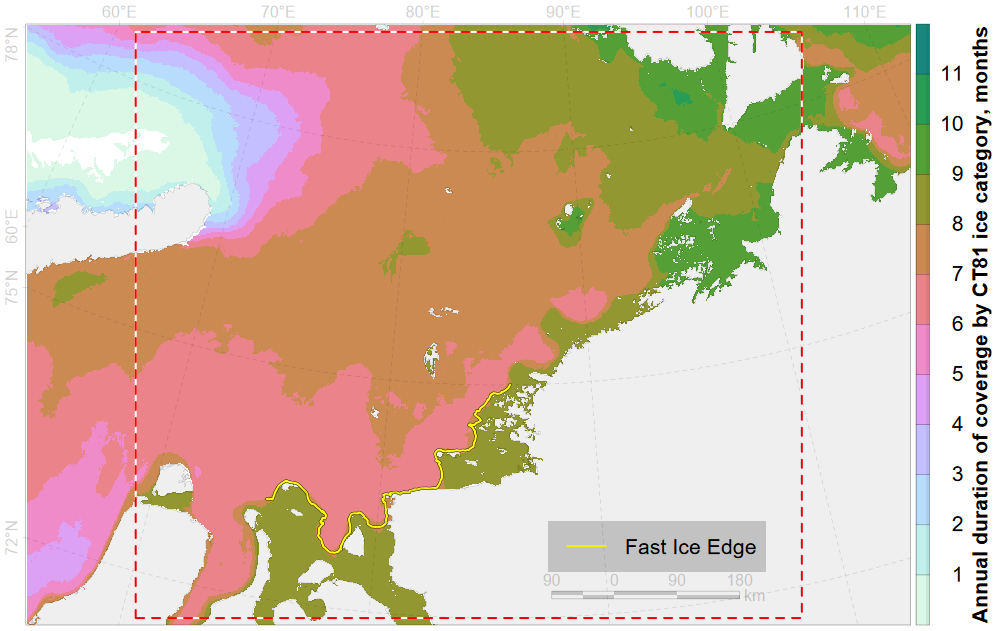 .shared[ The area of reliable fast ice is highlighted on the map showing the spatial distribution of cumulative pack ice coverage for the annual period between the autumns of 2024 and 2025. .gray[ The zonal area between Novaya Zemlya and Severnaya Zemlya stands out with pack ice that lasts a month longer. Polar bears on it will be far from land after the ice melts. ] ] ] .inset.nsidc[ Pack ice CT81 (ice concentration 80 and greater) is absent for more than half a year in 11 % of .bbox[aquatory]. ] ] ] ??? This map illustrates how many months different locations in the Kara Sea are covered by ice during the annual period between the autumns of 2024 and 2025. The area of reliable fast ice, partly highlighted by a yellow line, is long-lived. The zonal area between Novaya Zemlya and Severnaya Zemlya stands out with pack ice that lasts a month longer. Polar bears there will be far from land after the ice melts. --- name: Hb4f48 .toc.sidebar.left-column[ .outline[ # [.pass[Activity] ](#He38f8) # [.pass[Results] ](#H962da).fg[] ## [Field work](#H962da) ## [Satellite telemetry](#H67064).fg[] ### [Daily displacement](#H24898).bg[] ### [Sea ice habitat](#Hf7033) <span class="bullet bullet">[•](#Hf7033)</span><span class="bullet bullet-active">[•](#Hb4f48)</span><span class="bullet mslide42m">[•](#H5afae)</span>.fg[].bg[] ## [.pass[Aerial surveys] ](#Hfd293) ## [.pass[Health assessment] ](#H04bbe) # [.pass[Publications] ](#bib) ] ] .toc.mainbar.right-column.scrollable[ .header.h3.show[ Sea ice habitat availability and use .parent[.grand[Satellite telemetry .grand[.pass[Results]]]] ] .fixprecode[ .grid[ <img src="assets/daily-icecategory-2024.png" alt="" width="1330" height="700" style="display: block; margin: auto auto auto 0;" /> .shared[ For more than a year, female polar bears preferred sea ice with concentration over 8/10. The second most popular habitat is land. One individual compensated presence on pack ice by land presence. All individuals from this sample also used small floes of ice (ice concentration less then 1/10) and marginal ice zone (ice concentration between 1/10 and 8/10). ] ] Preferred long-term habitat categories for female polar bears. ] ] ??? Another metric, extracted from biotelemetry analysis, is the use of habitat categories: land, open water, marginal ice zone and consolidated ice. For more than a year, female polar bears preferred consolidated sea ice with concentration greater than 8/10. The second most popular habitat was land. One individual compensated for it presence on consolidated ice by spending time on land. All individuals in this sample also used small ice floes with ice concentration less than 1/10 and the marginal ice zone with ice concentration between 1/10 and 8/10. --- name: H5afae .toc.sidebar.left-column[ .outline[ # [.pass[Activity] ](#He38f8) # [.pass[Results] ](#H962da).fg[] ## [Field work](#H962da) ## [Satellite telemetry](#H67064).fg[] ### [Daily displacement](#H24898).bg[] ### [Sea ice habitat](#Hf7033) <span class="bullet bullet">[•](#Hf7033)</span><span class="bullet bullet">[•](#Hb4f48)</span><span class="bullet bullet-active">[•](#H5afae)</span>.fg[].bg[] ## [.pass[Aerial surveys] ](#Hfd293) ## [.pass[Health assessment] ](#H04bbe) # [.pass[Publications] ](#bib) ] ] .toc.mainbar.right-column.scrollable[ .header.h3.show[ Sea ice habitat availability and use .parent[.grand[Satellite telemetry .grand[.pass[Results]]]] ] .fixprecode[ .grid[ <img src="assets/icetype-between-CT18-CT81-edge01.png" alt="" width="1330" height="700" style="display: block; margin: auto auto auto 0;" /> .shared[ Located on sea ice with a concentration of more than 1/10, polar bears usually avoid sea ice edge, staying 200-300 km away from it. ] ] For polar bears in the Kara Sea region the distance to sea ice edge is not important abiotic parameter. ] ] ??? We considered a polar bear to be remote from a certain habitat category when locations were recorded in the other categories. This example illustrates statistics for each individual located on the ice, based on the distance to the ice edge. When located on sea ice with a concentration of more than 1/10, polar bears usually avoid the sea ice edge, staying two to three hundred kilometers away from it. --- name: Hfd293 .toc.sidebar.left-column[ .outline[ # [.pass[Activity] ](#He38f8) # [.pass[Results] ](#H962da).fg[] ## [Field work](#H962da) ## [Satellite telemetry](#H67064) ## [.pass[Aerial surveys] ](#Hfd293).fg[] ### [Kara Sea](#Hfd293).fg[].bg[] ### [East Siberian Sea](#Hd62f6).bg[] ## [.pass[Health assessment] ](#H04bbe) # [.pass[Publications] ](#bib) ] ] .toc.mainbar.right-column.scrollable[ .header.h3.show[ Aerial survey of the Kara Sea polar bear subpopulation in 2025 .parent[.grand[.pass[Aerial surveys] .grand[.pass[Results]]]] ] .fixprecode[ .grid[ <img src="assets/findings.png" alt="" width="1330" height="700" style="display: block; margin: auto auto auto 0;" /> .desc[ Polar bears and other marine mammals were counted from an AN-28 aircraft using visual and instrumental (surveying in visible- and infrared- ranges) methods in April-May 2025. 37 polar bears (24 adults and 13 cubs), 1097 ringed seals, 32 bearded seals and were visually recorded. .smaller[ Results of the instrumental survey and population estimates will be available in 2026. ] ] ] ] ] ??? The aerial survey of 2025 continues the series of marine mammal surveys in the Arctic over the last five years. .grey[ Previous surveys were conducted in the Pechora Sea in the spring of 2023, in the Laptev Sea in the spring of 2021, and in the southwestern part of the Kara Sea in the summer of 2020. ] It was possible to cover only the southern part of the Kara Sea. We used both visual and instrumental methods for animal data collection. An infrared camera was used for precise photo registration. This figure illustrates the results of the visual observations; however, instrumental data will be more suitable for estimating population size. This work is ongoing. --- name: Hd62f6 .toc.sidebar.left-column[ .outline[ # [.pass[Activity] ](#He38f8) # [.pass[Results] ](#H962da).fg[] ## [Field work](#H962da) ## [Satellite telemetry](#H67064) ## [.pass[Aerial surveys] ](#Hfd293).fg[] ### [Kara Sea](#Hfd293).bg[] ### [East Siberian Sea](#Hd62f6).fg[].bg[] ## [.pass[Health assessment] ](#H04bbe) # [.pass[Publications] ](#bib) ] ] .toc.mainbar.right-column.scrollable[ .header.h3.show[ Aerial survey in the Bear Islands (East Siberian Sea) .parent[.grand[.pass[Aerial surveys] .grand[.pass[Results]]]] ] .fixprecode[ .font80[ Helicopter aerial monitoring performed by National Park «Lensky Pillars». Instrumental survey provided by «Ecofactor». Results after visual surveys: .pulling[ .pull-left[ <img src="assets/chersky-2024.png" alt="" width="1330" height="700" style="display: block; margin: auto auto auto 0;" /> October 2024: 71 individuals (61 adults, 10 cubs). ] .pull-right[ 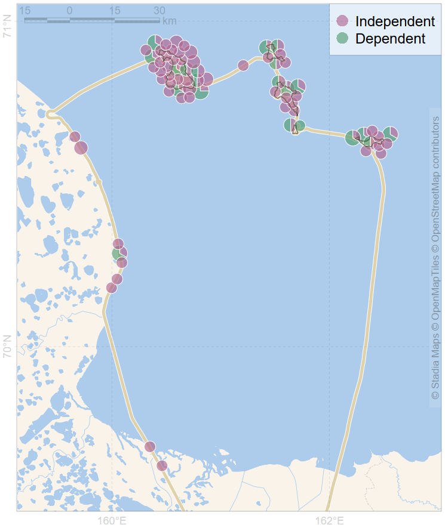 September 2025: 113 individuals (79 adults, 34 cubs). ] ] ] ] ] ??? Aerial survey of the Bear Islands and adjacent part of the mainland is the annual polar bear monitoring within the territory of the Bear Islands State Nature Reserve. In 2024 and 2025, combined visual and instrumental single-flight helicopter surveys completely covered the study area. --- name: H04bbe .toc.sidebar.left-column[ .outline[ # [.pass[Activity] ](#He38f8) # [.pass[Results] ](#H962da).fg[] ## [Field work](#H962da) ## [Satellite telemetry](#H67064) ## [.pass[Aerial surveys] ](#Hfd293) ## [.pass[Health assessment] ](#H04bbe).fg[] ### [Organic pollutants](#H04bbe).fg[].bg[] ### [Heavy metals](#H8781f).bg[] ### [Seropositivity](#H75b30).bg[] ### [Bacterial/fungal com.](#H62ece).bg[] ### [Immunity](#H6711b).bg[] ### [Genetics](#H5b902).bg[] # [.pass[Publications] ](#bib) ] ] .toc.mainbar.right-column.scrollable[ .header.h3.show[ Organic pollutants in serum samples .parent[.grand[.pass[Health assessment] .grand[.pass[Results]]]] ] .fixprecode[ .grid[ .grid-left-60[ <img src="assets/pollution-PCB.png" alt="" width="1330" height="700" style="display: block; margin: auto auto auto 0;" /> <img src="assets/pollution-COP.png" alt="" width="1330" height="700" style="display: block; margin: auto auto auto 0;" /> ] .grid-right-40[ .desc.smaller[ Organic pollutants in serum samples from polar bears in Kara-Barents region and East Siberian Sea. .shared[ Samples from Franz Josef Land and southern Kara Sea most likely represents average values for the respective subpopulations while samples from Novaya Zemlya are some what extreme as bears sampled in northern part of archipelago were extremely thin, and bears from southern part feeds extensively on food waste from nearest settlement. First samples from East Siberian sea were average in terms of total pesticide content while contains lowest amounts of total polychlorinated biphenyls we obtained so far. ] ] ] ] ] ] ??? Next section of our results is the health assessment. .gray[ We measured toxicant levels in polar bears from the Kara-Barents region and obtained the first two samples from the East Siberian Sea. ] We measured toxicant levels in polar bears. Samples from Franz Josef Land and the southern Kara Sea most likely represent average values for the respective subpopulations, while samples from Novaya Zemlya are somewhat extreme, as bears sampled in the northern part of the archipelago were extremely thin, and bears from the southern part feed extensively on food waste from the nearest settlement. Initial East Siberian Sea samples were average in pesticides but lowest in PCBs. .footer[ pesticides - пестисайдс ] --- name: H8781f .toc.sidebar.left-column[ .outline[ # [.pass[Activity] ](#He38f8) # [.pass[Results] ](#H962da).fg[] ## [Field work](#H962da) ## [Satellite telemetry](#H67064) ## [.pass[Aerial surveys] ](#Hfd293) ## [.pass[Health assessment] ](#H04bbe).fg[] ### [Organic pollutants](#H04bbe).bg[] ### [Heavy metals](#H8781f).fg[].bg[] ### [Seropositivity](#H75b30).bg[] ### [Bacterial/fungal com.](#H62ece).bg[] ### [Immunity](#H6711b).bg[] ### [Genetics](#H5b902).bg[] # [.pass[Publications] ](#bib) ] ] .toc.mainbar.right-column.scrollable[ .header.h3.show[ Heavy metals in hair samples .parent[.grand[.pass[Health assessment] .grand[.pass[Results]]]] ] .fixprecode[ .grid[ .grid-left-60[ <img src="assets/pollution-Mn.png" alt="" width="1330" height="700" style="display: block; margin: auto auto auto 0;" /> 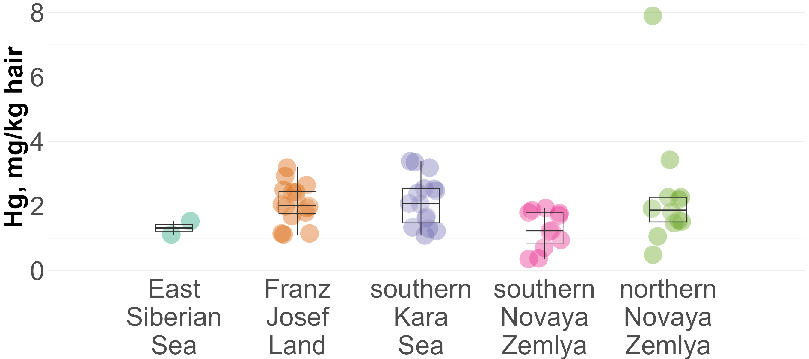 ] .grid-right-40[ .desc.smaller[ Heavy metals in hair samples from polar bears in Kara-Barents region and East Siberian Sea .shared[ There is a tendency for manganese concentrations to increase in an easterly direction. At the same time, it was not found any clear trends for mercury, as bears from Franz Josef Land did not differ from bears from the southern part of the Kara Sea in terms of mercury concentrations. ] Original analysis of mercury samples in <span class="cite hovertext" data-hover="Total Mercury and Stable Nitrogen and Carbon Isotope Content in Polar Bear Hair in the Russian Arctic"><a name=cite-Gremyachikh2025></a>([Gremyachikh et al., 2025](#bib))</span>. ] ] ] ] ] ??? We measured hair concentration of heavy metals in polar bears from same locations. We can assume that there is a tendency for manganese concentrations to increase in an easterly direction. At the same time, we did not find any clear trends for mercury, as bears from Franz Josef Land did not differ from bears from the southern part of the Kara Sea in terms of mercury concentrations. .footer[ manganese - манганииз ] --- name: H75b30 .toc.sidebar.left-column[ .outline[ # [.pass[Activity] ](#He38f8) # [.pass[Results] ](#H962da).fg[] ## [Field work](#H962da) ## [Satellite telemetry](#H67064) ## [.pass[Aerial surveys] ](#Hfd293) ## [.pass[Health assessment] ](#H04bbe).fg[] ### [Organic pollutants](#H04bbe).bg[] ### [Heavy metals](#H8781f).bg[] ### [Seropositivity](#H75b30).fg[].bg[] ### [Bacterial/fungal com.](#H62ece).bg[] ### [Immunity](#H6711b).bg[] ### [Genetics](#H5b902).bg[] # [.pass[Publications] ](#bib) ] ] .toc.mainbar.right-column.scrollable[ .header.h3.show[ Analysis of polar bears seropositivity .parent[.grand[.pass[Health assessment] .grand[.pass[Results]]]] ] .fixprecode[ .grid[ .grid-left-60[ 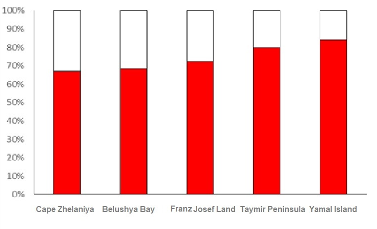 <img src="assets/naidenko-canine-rs.png" alt="" width="1330" height="700" style="display: block; margin: auto auto auto 0;" /> ] .grid-right-40[ .smaller[ Main results are published <span class="cite hovertext" data-hover="Occurrence of Pathogens in the Barents Sea Polar Bear (Ursus maritimus) Subpopulation"><a name=cite-Naidenko2023_en></a>([Naidenko et al., 2023](#bib))</span>. Pathogens: + Canine distemper virus + Herpes simplex virus + Parvovirus + Toxoplasma + Trichinella (*Trichinella sp.*) + Mycoplasma (*Mycoplasma sp.*) + Candida (*Candida sp.*) + Chlamydia (*Chlamydia sp.*) .caption[ Seropositive proportion for Trichinella (*top*) and Canine distemper virus (*bottom*) ] ] ] ] ] ] ??? We analyzed the seropositivity of polar bears from the Barents and Kara Seas to eight pathogens. .smaller.grey[ Canine distemper virus, Herpes simplex virus, Parvovirus, Toxoplasma, Trichinella, Mycoplasma, Candida, and Chlamydia ] Data on Trichinella and Canine distemper virus are presented for five model areas: the north and south of Novaya Zemlya, Franz Josef Land, the Taimyr Peninsula, and islands close to northern Yamal. Over the past 10 years, there has been an increase in seropositivity to Canine distemper virus and Trichinella ...grey[which may be due to: changes in the presence of pathogens in natural ecosystems; epizootics among potential prey; an increase in the number of contacts between bears on land. ] These results are published. --- name: H62ece .toc.sidebar.left-column[ .outline[ # [.pass[Activity] ](#He38f8) # [.pass[Results] ](#H962da).fg[] ## [Field work](#H962da) ## [Satellite telemetry](#H67064) ## [.pass[Aerial surveys] ](#Hfd293) ## [.pass[Health assessment] ](#H04bbe).fg[] ### [Organic pollutants](#H04bbe).bg[] ### [Heavy metals](#H8781f).bg[] ### [Seropositivity](#H75b30).bg[] ### [Bacterial/fungal com.](#H62ece).fg[].bg[] ### [Immunity](#H6711b).bg[] ### [Genetics](#H5b902).bg[] # [.pass[Publications] ](#bib) ] ] .toc.mainbar.right-column.scrollable[ .header.h3.show[ Bacterial and fungal community .parent[.grand[.pass[Health assessment] .grand[.pass[Results]]]] ] .fixprecode[ .grid[ <img src="assets/feces-community.png" alt="" width="1330" height="700" style="display: block; margin: auto auto auto 0;" /> .desc[ .smaller[ .shared[ The hypothesis was that intestinal microbiome and metabolism may change as a result of the bears using new food items that are not typical for them due to climate change and an increase in the ice-free period in the Arctic, which is why they more often remain on the shore and visit human-populated areas. ] Feeding on human waste does not cause any signs of dysbiosis and probably leads to adaptive changes in the bacterial microbiome. Details in <span class="cite hovertext" data-hover="Anthropogenic Neighborhood Impact on Bacterial and Fungal Communities in Polar Bear Feces"><a name=cite-Vechersky2023></a>([Vecherskii et al., 2023](#bib))</span> ] ] ] ] ] ??? For the first time, we compared the bacterial and fungal communities of the intestines of polar bears from the Barents and Kara Seas subpopulations when feeding on natural food and on human food waste. .grey[ We tested the hypothesis that the intestinal microbiome and metabolism may change as a result of bears using new food items that are not typical for them, due to climate change and an increase in the ice-free period in the Arctic, which causes them to more often remain on the shore and visit human-populated areas. ] It was shown that feeding on human waste does not cause any signs of dysbiosis and probably leads to adaptive changes in the bacterial microbiome. However, the emergence of fungal facultative pathogens increases the risk of infections. These results are published. .footer[ fungal - фэнгл intestines - ин-тэстинс dysbiosis - дис-байосис microbiome - майкро-байом ] --- name: H6711b .toc.sidebar.left-column[ .outline[ # [.pass[Activity] ](#He38f8) # [.pass[Results] ](#H962da).fg[] ## [Field work](#H962da) ## [Satellite telemetry](#H67064) ## [.pass[Aerial surveys] ](#Hfd293) ## [.pass[Health assessment] ](#H04bbe).fg[] ### [Organic pollutants](#H04bbe).bg[] ### [Heavy metals](#H8781f).bg[] ### [Seropositivity](#H75b30).bg[] ### [Bacterial/fungal com.](#H62ece).bg[] ### [Immunity](#H6711b).fg[].bg[] ### [Genetics](#H5b902).bg[] # [.pass[Publications] ](#bib) ] ] .toc.mainbar.right-column.scrollable[ .header.h3.show[ Analysis of polar bears immunity at different points .parent[.grand[.pass[Health assessment] .grand[.pass[Results]]]] ] .fixprecode[ .grid[ .grid-left-65[ <img src="assets/immunity-antibodies.png" alt="" width="1330" height="700" style="display: block; margin: auto auto auto 0;" /> <img src="assets/immunity-lysozyme.png" alt="" width="1330" height="700" style="display: block; margin: auto auto auto 0;" /> ] .grid-right-35[ .smaller[ Total amount of natural antibodies was extremely low in zoos and on Franz-Josef Land. The concentration of Lysozyme concentration (antibacterial protein) was very low at the Novaya Zemlya islands. An activity of the system of complement was very low in all populations. Details in <span class="cite hovertext" data-hover="Hematological differences in Barents and Kara Seas polar bears (Ursus maritimus): what factors matter?"><a name=cite-Alekseeva2025></a>([Alekseeva et al., 2025](#bib))</span>. ] ] ] ] ] ??? Three main immune parameters were estimated: First. Total amount of natural antibodies .gray[(detected in the test to non-replicated antigen – sheep red blood cells)]. It was extremely low in zoos and on Franz-Josef Land. .grey[ We don’t know how this may be related to the infectious diseases. ] Second. The concentration of lysozyme .gray[(an antibacterial protein)]. It was very low on the Novaya Zemlya islands Third. The activity of the system of complement. It was very low in all populations. Probably this component of immunity is underdeveloped in polar bears. These results are published. .footer[ lysozyme - лисозайм ] --- name: H5b902 .toc.sidebar.left-column[ .outline[ # [.pass[Activity] ](#He38f8) # [.pass[Results] ](#H962da).fg[] ## [Field work](#H962da) ## [Satellite telemetry](#H67064) ## [.pass[Aerial surveys] ](#Hfd293) ## [.pass[Health assessment] ](#H04bbe).fg[] ### [Organic pollutants](#H04bbe).bg[] ### [Heavy metals](#H8781f).bg[] ### [Seropositivity](#H75b30).bg[] ### [Bacterial/fungal com.](#H62ece).bg[] ### [Immunity](#H6711b).bg[] ### [Genetics](#H5b902).fg[].bg[] # [.pass[Publications] ](#bib) ] ] .toc.mainbar.right-column.scrollable[ .header.h3.show[ Population structure .parent[.grand[.pass[Health assessment] .grand[.pass[Results]]]] ] .fixprecode[ .grid[ 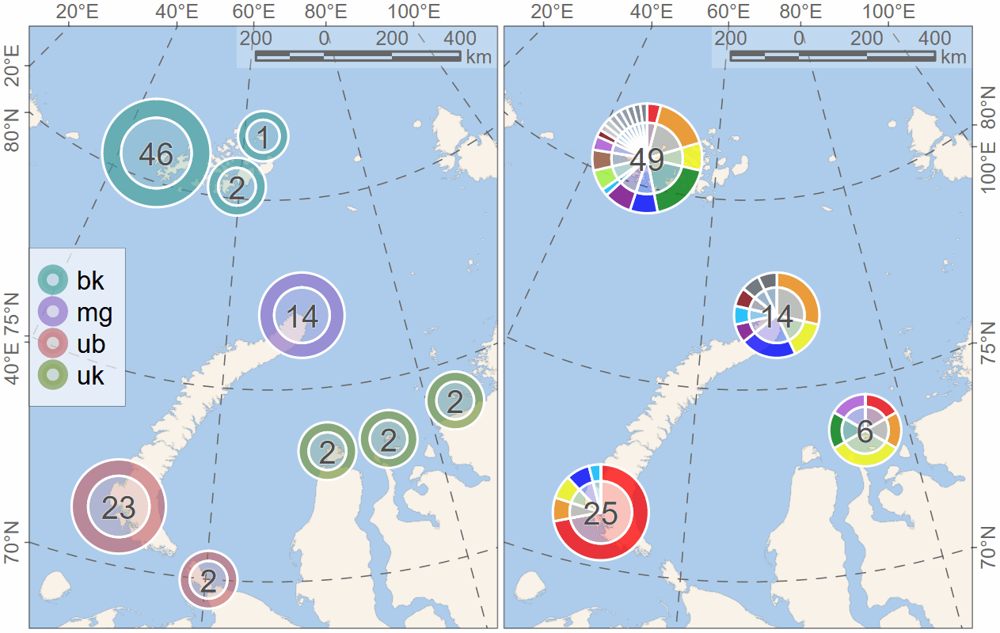 .shared.smaller[ Polar bears from the northern part of the Barents and Kara Seas were genetically homogeneous. Bears from the southeastern part of the Barents Sea differed markedly in mtDNA markers, while only weak differentiation was observed in microsatellites. It is assumed that a small and rather isolated group of polar bears inhabits the Yuzhny Island area, which is confirmed by telemetry data. ] ] Homogeneity for Kara Sea and northern Barents Sea. Heterogeneity for South-Eastern Barents Sea. Details in <span class="cite hovertext" data-hover="Population Genetic Structure in Polar Bears (Ursus maritimus) from the Russian Arctic Seas"><a name=cite-Sorokin2023en></a>([Sorokin et al., 2023](#bib))</span>. ] ] ??? We analyzed the population genetic structure of polar bears in the western Russian Arctic .gray[ in the Russian Arctic based on samples collected in 2010–2021. ] Polar bears from the northern part of the Barents and Kara Seas were genetically homogeneous. Bears from the southeastern part of the Barents Sea differed markedly in mitochondrial DNA markers, while only weak differentiation was observed in microsatellites. It is assumed that a small and rather isolated group of polar bears inhabits the Yuzhny Island of the Novaya Zemlya area .gray[, which is indirectly confirmed by telemetry data.] These results are published. .footer[ differentiation - дифференти-эйшн mitochondrial - майто-кондриал ] --- name: bib .toc.sidebar.left-column[ .outline[ # [.pass[Activity] ](#He38f8) # [.pass[Results] ](#H962da) # [.pass[Publications] ](#bib).fg[] ## [2023-2025](#bib).fg[].bg[] ] ] .toc.mainbar.right-column.scrollable[ .header.h2.show[ Publications 2023-2025 .parent[.grand[.pass[Publications]]] ] .fixprecode[ <a name=bib-Alekseeva2025<a href="javascript:window.history.back();">Alekseeva, G. S., E. A. Ivanov, I. A. Mizin, N. G. Platonov, I. N. Mordvintsev, V. V. Rozhnov, and S. V. Naidenko</a> (2025). "Hematological differences in Barents and Kara Seas polar bears (_Ursus maritimus_): what factors matter?" In: _Polar Biology_ 48.1. ISSN: 1432-2056. DOI: [10.1007/s00300-024-03326-w](https://doi.org/10.1007%2Fs00300-024-03326-w). <a name=bib-Gremyachikh2025<a href="javascript:window.history.back();">Gremyachikh, V. A., V. T. Komov, E. A. Ivanov, I. N. Mordvintsev, S. V. Naidenko, N. G. Platonov, I. A. Mizin, A. I. Isachenko, R. E. Lazareva, E. S. Ivanova, L. S. Eltsova, and V. V. Rozhnov</a> (2025). "Total Mercury and Stable Nitrogen and Carbon Isotope Content in Polar Bear Hair in the Russian Arctic". In: _Russian Journal of Ecology_ 56.4, p. 366–374. ISSN: 1608-3334. DOI: [10.1134/s1067413625600727](https://doi.org/10.1134%2Fs1067413625600727). <a name=bib-Naidenko2023_en<a href="javascript:window.history.back();">Naidenko, S. V., P. S. Klyuchnikova, E. A. Ivanov, I. N. Mordvintsev, N. G. Platonov, A. I. Isachenko, R. E. Lazareva, and V. V. Rozhnov</a> (2023). "Occurrence of Pathogens in the Barents Sea Polar Bear (_Ursus maritimus_) Subpopulation". In: _Biology Bulletin_ 50.9, p. 2454–2459. ISSN: 1608-3059. DOI: [10.1134/s106235902309025x](https://doi.org/10.1134%2Fs106235902309025x). <a name=bib-Sorokin2023en<a href="javascript:window.history.back();">Sorokin, P. A., E. Y. Zvychaynaya, E. A. Ivanov, I. A. Mizin, I. N. Mordvintsev, N. G. Platonov, A. I. Isachenko, R. E. Lazareva, and V. V. Rozhnov</a> (2023). "Population Genetic Structure in Polar Bears (_Ursus maritimus_) from the Russian Arctic Seas". In: _Russian Journal of Genetics_ 59.12, p. 1320–1332. ISSN: 1608-3369. DOI: [10.1134/s1022795423120128](https://doi.org/10.1134%2Fs1022795423120128). <a name=bib-Vechersky2023<a href="javascript:window.history.back();">Vecherskii, M. V., T. A. Kuznetsova, D. R. Khayrullin, A. A. Stepankov, S. M. Artemieva, P. V. Chukmasov, E. A. Ivanov, I. A. Mizin, I. N. Mordvintsev, N. G. Platonov, A. A. Pashali, A. I. Isachenko, R. E. Lazareva, K. M. Shestakova, and V. V. Rozhnov</a> (2023). "Anthropogenic Neighborhood Impact on Bacterial and Fungal Communities in Polar Bear Feces". In: _Animals_ 13.13, p. 2067. ISSN: 2076-2615. DOI: [10.3390/ani13132067](https://doi.org/10.3390%2Fani13132067). ] ] ??? A list of publications is available in a shared copy of these slides on the PBRS website. I will now turn things over to Stanislav Belikov for Section Two of the Russian research. Thank you.